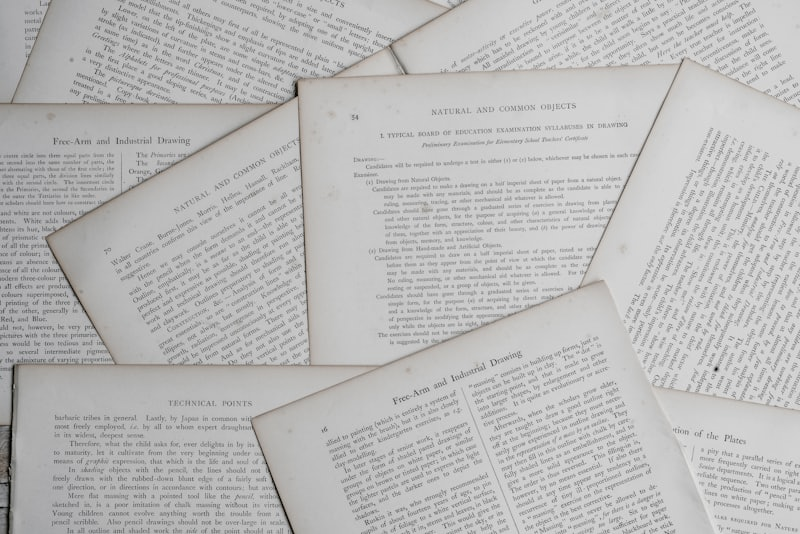

실험은 재밌게 했는데 보고서 칸이 비어 있는 학생이 있습니다. 중2 과학과외에서 수행평가 점수를 잃는 대표적인 경우이고, 대덕중학교처럼 실험 수업이 자주 있는 학교에서는 누적되면 등급이 달라집니다.
본 것과 쓸 수 있는 것은 다릅니다
실험을 눈으로 보면 이해했다고 느끼지만, 막상 쓰려면 무엇을 써야 하는지를 모릅니다. 실험 보고서와 서술형은 정해진 틀이 있고, 그 틀만 알면 본 것을 그대로 옮길 수 있습니다.
실험 결과를 쓰는 틀
- 목적 한 줄 — "무엇을 알아보기 위한 실험인가"를 먼저 씁니다.
- 바꾼 것·같게 한 것 — 조건을 두 줄로 나눠 적습니다.
- 관찰한 것 — 색이 변했다, 온도가 올랐다처럼 본 그대로만 씁니다. 해석은 아직입니다.
- 결론과 이유 — "~때문에 ~하다"로 관찰과 개념을 잇습니다.
남은 기간 배분
시험에는 교과서 실험이 그대로 나옵니다. 수업에서 한 실험을 이 틀로 다시 써 보는 게 가장 빠릅니다.
- 1주차 — 범위 안 교과서 실험을 목록으로 만듭니다
- 2주차 — 실험마다 네 칸 틀로 정리해 봅니다
- 3주차 — 학교 기출에서 실험 서술형만 골라 풉니다
- 마지막 주 — 결론을 못 썼던 실험만 다시 씁니다
💡 티칭코칭은 대전 유성구 대덕중학교 학생에게 맞춘 1:1 과학과외를 방문·화상으로 제공합니다. 실험은 쓰는 틀부터 잡습니다.
👉 대덕중학교 학교별 과외 안내 · 유성구 수학과외 선생님 · 유성구 지역 과외 안내